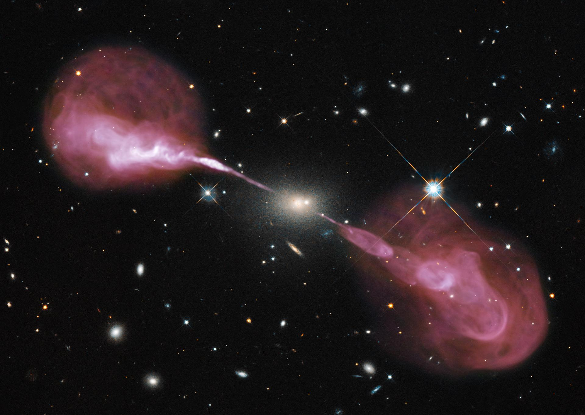
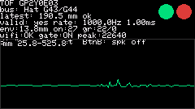
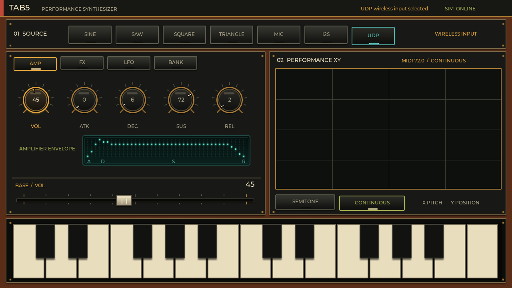

葉の振動
風を受けた葉の数Hzの運動。センサと信号処理を接続すれば、物理オシレーターの振動体になる。
自然現象を、
物理オシレーターに。
Water, sensing and computation form a physical–computational oscillator that generates sound grains.
マイクが捉えるのは、すでに音になった自然です。SURFACE / SIGNALが観測するのは、その手前にある動き。風に揺れる葉、水面を走る波紋、海のうねりを、変位の時系列として読み取ります。
SURFACE / SIGNALは、水面、ToFセンサ、信号処理をひとつの物理–計算オシレーター（以下、物理オシレーター）として構成します。水面が振動を生み、ToFが一点の変位を波形へ変え、プロセッサが2秒の観測窓を短い音源グレインへ変換する。自然と計算機が協働して音源を生成する仕組みです。

HERCULES A / RADIO GALAXY
不可視の電波を色へ写し替えた天体画像。観測不能な領域を人間の感覚へ写像するという方法を、水面と聴覚のあいだに展開する。Credit: NASA, ESA, S. Baum, C. O'Dea, R. Perley, W. Cotton and the Hubble Heritage Team.
風を受けた葉の数Hzの運動。センサと信号処理を接続すれば、物理オシレーターの振動体になる。
一滴から生まれ、干渉し、減衰する変位。本研究ではこの時間構造から音源グレインを生成する。
数秒から十数秒周期で動く大きな系も、観測と変換を組み合わせれば固有の発振系になり得る。
振動体である水面、単一点の変位を読むToFセンサ、波形を可聴化するプロセッサ。この三者を統合した系全体を、SURFACE / SIGNALでは「物理–計算オシレーター」と呼びます。
雫の着水を検出すると、プリロールを含む2秒間を切り出し、時間圧縮とフェーズボコーダで16kHz・16-bit PCMへ変換します。その短い出力単位が、シンセサイザへ供給する音源グレインです。
SINE / SAW / SQUARE / NOISE
PHENOMENON → MEASUREMENT → GRAIN
雫が水面を励起し、干渉しながら減衰する物理的な振動を生む。
ToFセンサが水面上の一点を測距し、2秒間の変位波形を取得。
時間圧縮とピッチ変換により、変位波形からPCMグレインを生成。
UDPでTab5へ送り、ボイス別ADSRとエフェクトを加えて演奏。

M5StickS3の画面に描かれる緑の線は、実測された水面変位です。赤はグレインの記録中、緑は生成したグレインの発音中。水面、観測、変換が一つの音源系として動作します。
物理オシレーターが実測波形から生成したグレインを、現ファームと同じ0.2×時間圧縮・振幅依存ピッチでレンダリングしています。これらは固定し、Tab5のストリーム用Delayと音量だけをブラウザー上で操作できます。

一般的なシンセサイザでは、内蔵オシレーターがサイン波・ノコギリ波・矩形波などを生成します。SURFACE / SIGNALでは、その音源位置へ物理–計算オシレーターが生成した短いグレインを供給します。PCMをUDPで受け取ったTab5は、最大4ボイスを個別にADSR処理してミックスし、フィルター、コーラス、ディレイ、歪み、ビットクラッシャーを適用します。これは自然音の録音や模倣ではなく、物理現象を含む発振系によるデジタル音源です。
葉の揺れ、旗のはためき、海のうねり。変位として観測できる現象なら、センサと信号処理を組み合わせて物理–計算オシレーターを構成できます。自然をデジタル空間へ複製するのではなく、自然と計算機がひとつの発振系を共有する。その系が生むグレインから、まだ存在しない音を立ち上げます。